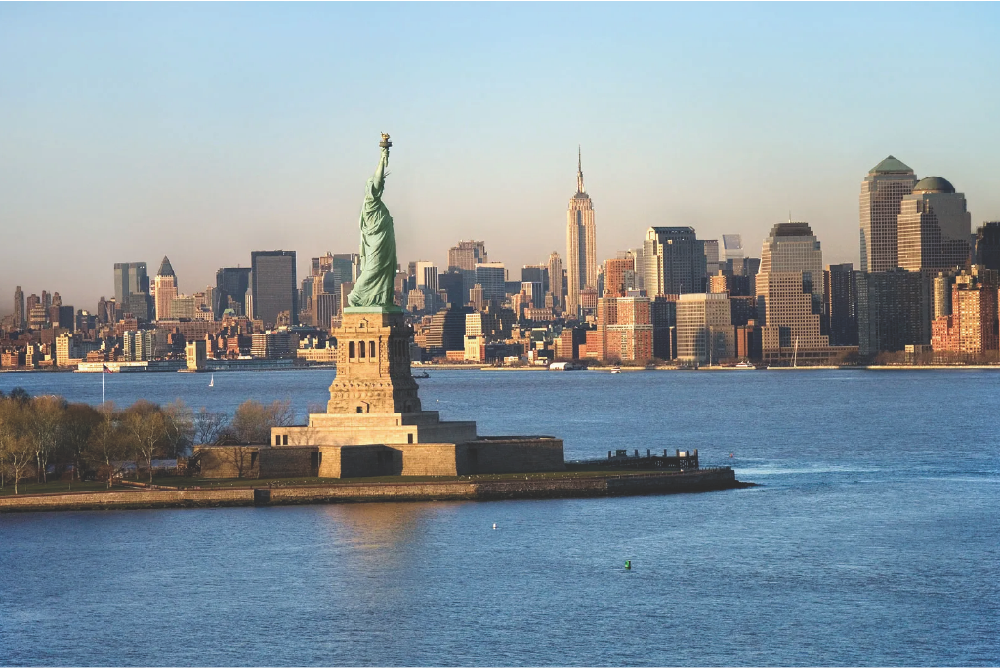
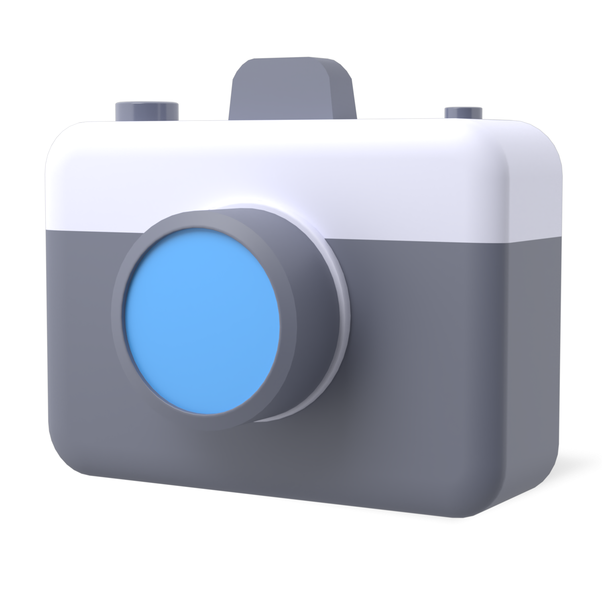
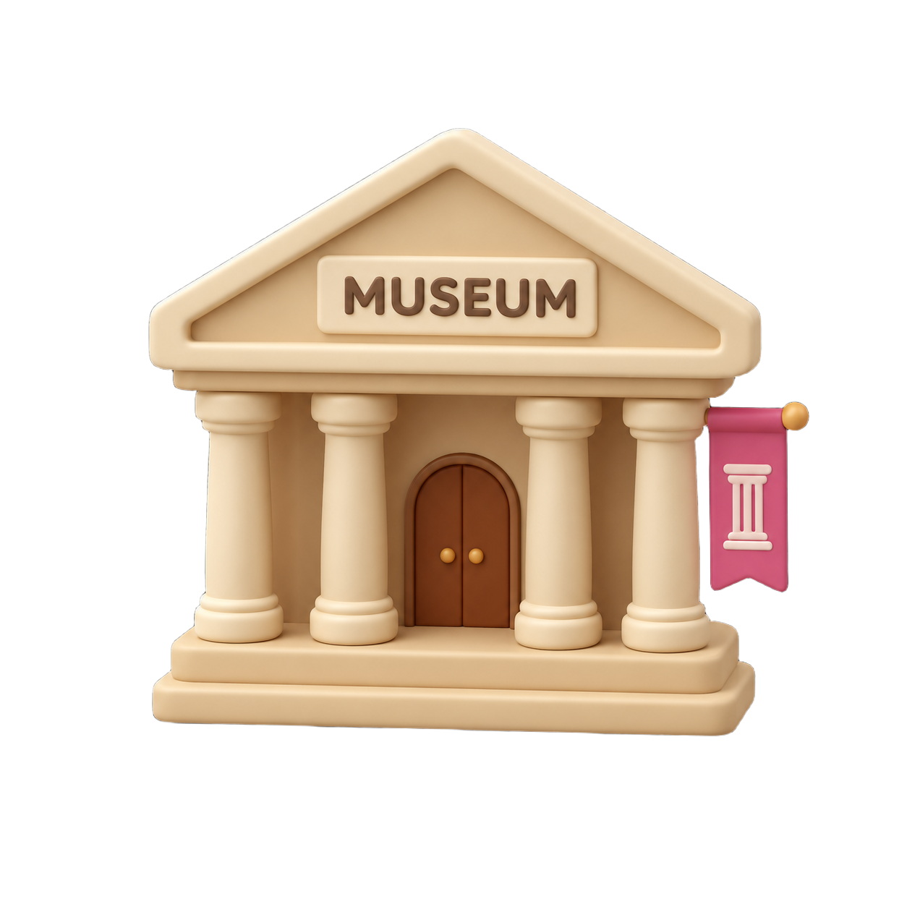

도시 전체가 빌딩 숲인 뉴욕
뉴욕은 높은 빌딩과 화려한 전광판, 넓은 공원에서 피크닉을 즐길 수도 있는 도시
처음 뉴욕을 여행한다면 타임스스퀘어, 센트럴파크, 브루클린 브리지처럼 대표적인 명소를 중심으로 이동하는 것을 추천
만약 시끄러운 곳이 싫은 사람에게는 뉴저지 쪽에 머무는 것을 추천한다


뉴욕은 높은 빌딩과 화려한 전광판, 넓은 공원에서 피크닉을 즐길 수도 있는 도시
처음 뉴욕을 여행한다면 타임스스퀘어, 센트럴파크, 브루클린 브리지처럼 대표적인 명소를 중심으로 이동하는 것을 추천
만약 시끄러운 곳이 싫은 사람에게는 뉴저지 쪽에 머무는 것을 추천한다
타임스퀘어 디즈니스토어에서 판매하는 자유의 여신상 미니마우스
뉴욕의 대표적인 로고가 들어간 티셔츠
타임스스퀘어, 엠파이어 스테이트 빌딩, 브루클린 브리지 등이 그려진 자석

얇고 넓은 도우를 반으로 접어 먹는 피자입니다. 간단하게 한 끼를 해결하기 좋고 매장마다 토핑과 맛이 조금씩 달랐습니다.

쫄깃한 베이글에 크림치즈와 연어를 넣어 먹었습니다. 든든해서 아침 식사로 먹기 좋았습니다.

치즈 맛이 진하고 식감이 묵직했습니다. 단맛이 강할 수 있어 커피와 함께 먹는 것을 추천합니다.


맨해튼의 메인 스트리트

센트럴 파크에서 피크닉 필수

노을 질 때 브루클린 브리지를 걸어서 맨해튼으로 가면 좋음

맨해튼 브리지를 배경으로 사진을 찍기 좋은 장소(사람이 엄청 많음)
뉴욕 센트럴파크에서 열린 스트리트 코미디 쇼를 촬영한 영상
